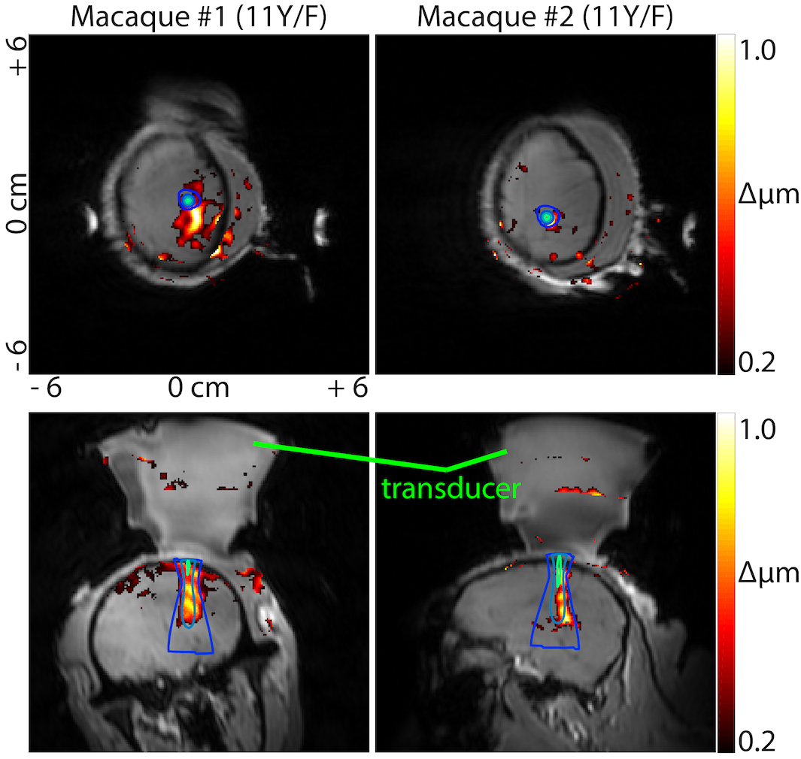
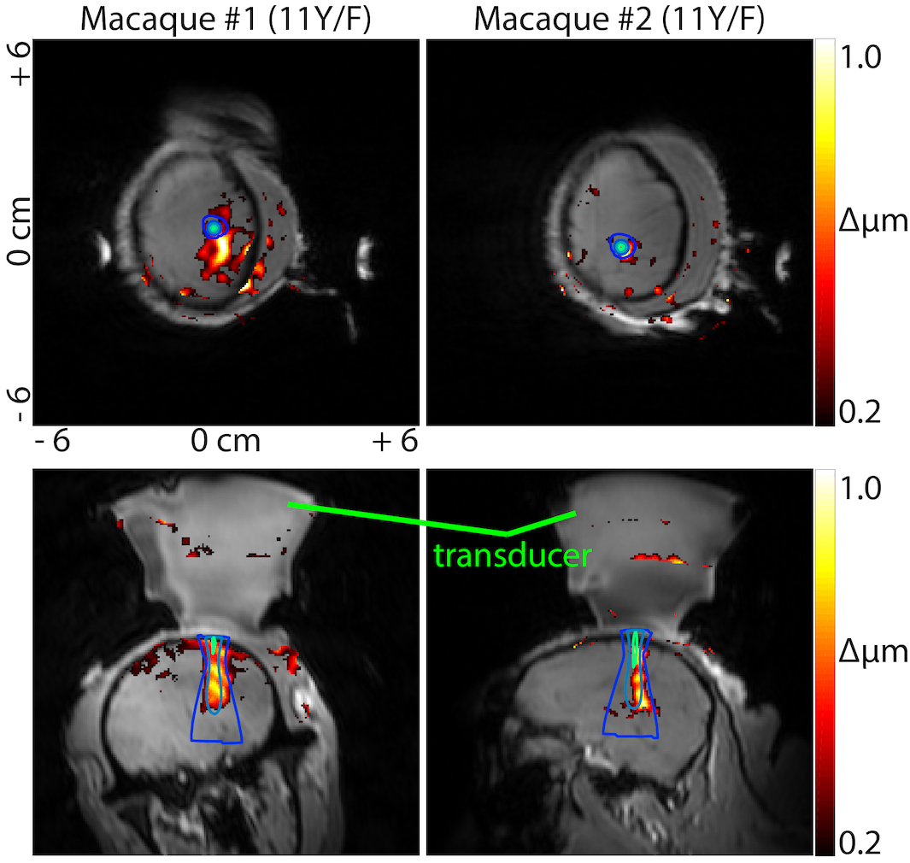
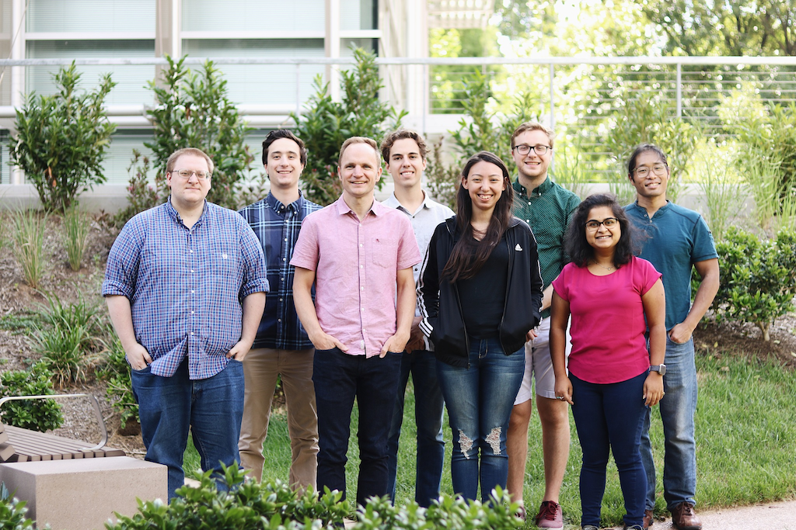

Research
MR-guided focused ultrasound
Ultrasound has the ability to focus energy to a small point beyond the skull and is being widely explored by researchers as a tool for non-invasive neuromodulation. When combined with magnetic resonance imaging (MRI), focused ultrasound (FUS) can be precisely guided while the effects of FUS can be visualized at the network level using fMRI. We have developed systems to apply image-guided FUS neuromodulation in the MRI environment while imaging functional activity. These systems use optical tracking to guide FUS neuromodulation, and we have created transducer arrays for steerable FUS neuromodulation. The position of the probe can be detected using MR acoustic radiation force imaging, which is capable of detecting micron-scale displacements caused by the ultrasound beam in the brain. We have used these methods to modulate the somatosensory network in non-human primates, demonstrating that MRI-guided FUS is capable of exciting precise targets in somatosensory areas 3a/3b, causing downstream activations in off-target brain regions within the circuit which we simultaneously detected with fMRI.
Integrating ultrasound into MRI
 

Ultrasound-guided drug delivery
Microbubble contrast agents are micron sized lipid-encapsulated bubbles that oscillate in response to ultrasound. They are used clinically to enhance flow imaging, while research applications have explored how to use these oscillating bubbles to locally deliver drugs or genes for therapeutic purposes. We have developed methods to image microbubbles while simultaneously applying therapy. This powerful ability enables an all-in-one method to visualize and treat diseases. We are currently leveraging this technology in anti-cancer applications to map tumor vasculature while apply therapeutic ultrasound pulses to elicit an immune response. This work aims to expand the reach of immunotherapy to cancers that are not currently responsive.
Imaging and treating tumors with microbubbles

Next generation ultrasound neuromodulation
Because ultrasound can deliver drugs and genetic vectors, it has high potential for use in the brain beyond its direct ability to modulate neurons. In collaboration with the Airan Laboratory, we are developing methods to deliver drug-loaded nanoparticles capable of releasing the anesthetic Propofol using focused ultrasound to inhibit activity in neurons in the acoustic focus. We are using image-guidance to target drug release to specific locations in the brain, enabling unprecedented exploration of brain function.
The delivery of genetic vectors with ultrasound provides another molecular method of ultrasound neuromodulation. In collaboration with the Shapiro laboratory at Cal Tech, we are using ultrasound to open the blood brain barrier to deliver genes encoding for a specific receptor to neurons in the brain. This receptor is only capable of binding to a specific drug, which, when introduced, will inhibit any neurons bearing the receptor. This combination, known as a designer-receptor designer-drug, can then be used to modulate specific regions of the brain solely by introducing the drug to the body. This method has the benefit of spatial and cellular selectivity and only requires a single ultrasound treatment.
Featured Publications

Neuromodulation of sensory networks in monkey brain by focused ultrasound with MRI guidance and detection
Scientific Reports (2018)
Pai-Feng Yang, M. Anthony Phipps, Allen T. Newton, Vandiver Chaplin, John C. Gore, Charles F. Caskey & Li Min Chen Go to Article Show Abstract

Fast, Low-Frequency Plane-Wave Imaging for Ultrasound Contrast Imaging
Ultrasound in Medicine and Biology (2018)
Jiro Kusunose, Charles F. Caskey Go to Article Show Abstract

A random phased-array for MR-guided transcranial ultrasound neuromodulation in non-human primates
Physics in Medicine and Biology (2018)
Vandiver Chaplin, Marshal A Phipps, Charles F Caskey Go to Article Show Abstract
People
Dr. Charles Caskey
Principal Investigator

Jiro Kusunose
Staff Scientist
Tony (M. A.) Phipps
Graduate Student

Aparna Singh
Graduate Student
Tom Manuel
Graduate Student
Michelle Sigona
Graduate Student

Connor Krolak
Undergraduate Student
Jake Emrich
Undergraduate Student
Resources
Opportunities
We are currently seeking motivated imaging scientists at the graduate student and postdoctoral levels who wish to work at the intersection of MRgFUS, drug delivery, and neuroscience. Interested individuals can contact Charles Caskey.